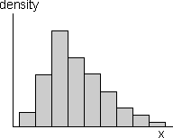

Examples
The following data sets were collected to provide information about something more general than the specific 'individuals' from whom the values were collected.

Sample information about the population
In practice, we only have a single sample and this provides incomplete information about the population.

Effect of sample size
Bigger samples mean more stable and reliable information about the underlying population.
1.2.3 Sampling error
Estimating means and proportions
A random sample is often used to estimate some numerical characteristic of the population, such as...
- The mean of some variable
- The proportion in some category
The difference between an estimate and the population value being estimated is called its sampling error.

Bar charts and the law of large numbers
The law of large numbers states that sample proportions approach the underlying probabilities as the sample size increases. This means that a sample bar chart will be close in shape to the unknown population bar chart if the sample size is big enough.
1.4.4 Probability density functions
Histograms and probability density functions
The situation is a little more complicated for continuous numerical populations and samples. A standard histogram could be used to describe the population in the same way that it might be used for a sample:

However with an infinite population, we can narrow the histogram classes beyond what would be reasonable for a finite sample. Indeed, class widths can be reduced indefinitely, resulting in a smooth histogram called a probability density function. This is often abbreviated to a pdf.

Probability density functions are still essentially histograms and share all properties of histograms.
1.4.5 Normal distributions
Shape of a probability density function
A probability density function is usually a fairly smooth curve, though a single sample histogram provides limited information about its likely shape.

A value can be generated from a rectangular distribution with the Excel function "=RAND()" or, by hand, by generating a sequence of random digits (e.g. by rolling a 10-sided die).
1.5.6 Generating categorical values
Generating a categorical value
A random category can be generated from a rectangularly distributed random value, r .
If P(success) is denoted by the symbol π, then a success will be generated if r is less than π. This can be generalised as illustrated in the diagram below:

A random position within the rectangle is generated with a random rectangular horizontal and vertical positions. If it lies within the density function, the x-coordinate is the generated value. Otherwise more positions within the rectangle are generated until a point is found within the density function.